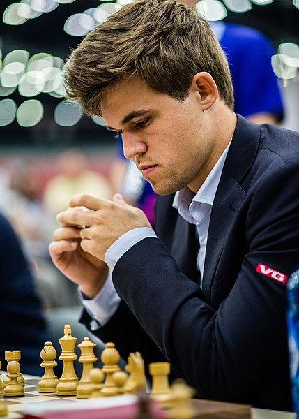
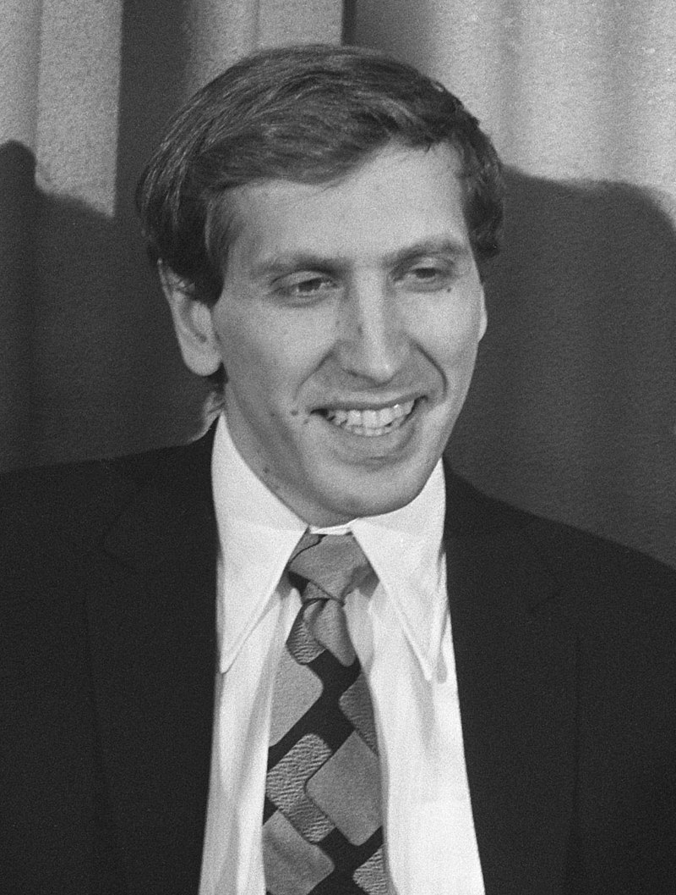
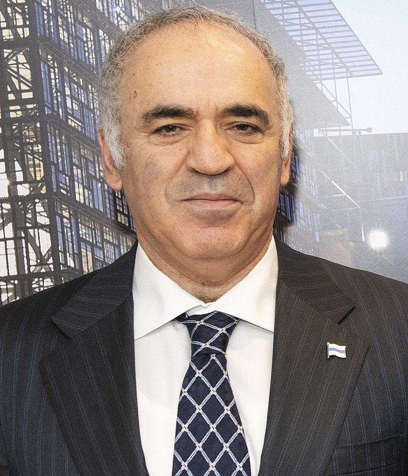

Je těžké určit nejlepšího šachistu, jelikož záleží na období a kritériích, která se používají k hodnocení. V historii byli někteří z nejvýraznějších hráčů, jako je Garry Kasparov, Bobby Fischer, Emanuel Lasker, Jose Raul Capablanca a další. Každý z nich přinesl do hry něco zcela jedinečného a měl své významné úspěchy. Každý fanoušek šachu má často svého oblíbeného hráče nebo hráče, kterého považuje za nejlepšího v historii.
Zde jsou dle mého subjektivního názoru 3 nejlepší hráči:
1. Magnus Carlsen
Magnus Carlsen je norský šachový velmistr a světový šampion v šachu. Narodil se 30. listopadu 1990 v Tønsbergu, Norsko. Carlsen začal hrát šach v mladém věku a rychle projevil mimořádný talent. V roce 2010 se stal nejmladším šachovým mistrem světa v historii, když porazil indického velmistra Viswanathana Ananda.
Jeho styl hry je charakterizován strategickou hloubkou, vynikajícím pozicováním a schopností využít i nejmenších nepřesností soupeře. Carlsen je známý také svým výjimečným výkonem v rapidním a blitz šachu, což jsou rychlejší varianty šachu.
2. Bobby Fischer
Bobby Fischer byl jedním z nejslavnějších a nejtalentovanějších šachistů v historii. Narodil se v roce 1943 ve Spojených státech a již v raném věku projevoval výjimečné šachové schopnosti. V roce 1972 se stal mistrem světa v šachu, když porazil sovětského mistra Borise Spasského ve slavném šachovém duelu v Reykjavíku na Islandu, který byl tehdy znám jako "Duel století".
Fischerův přístup k šachu a jeho šachové strategie silně ovlivnily moderní šach a dodnes je považován za jednoho z největších šachových géniů všech dob.
3. Garry Kasparov
Garry Kasparov je ruský šachový velmistr, který je považován za jednoho z nejlepších šachistů všech dob. Narodil se v Baku v Ázerbájdžánu v roce 1963 a již v mladém věku ukázal svůj šachový talent. V roce 1985 se stal světovým šampionem a držel tento titul až do roku 2000.
Kasparov je známý svou agresivní hrou a strategickým myšlením. Mimo své šachové kariéry se angažuje i v politických a aktivistických činnostech v Rusku a ve světě.